5 ứng dụng — một hành trình liền mạch: từ chiếc ghế trong sơ đồ tổ chức, hồ sơ nhân viên, lộ trình sự nghiệp, ca kíp làm việc, đến đồng lương cuối tháng. Và một lớp AI copilot xuyên suốt.
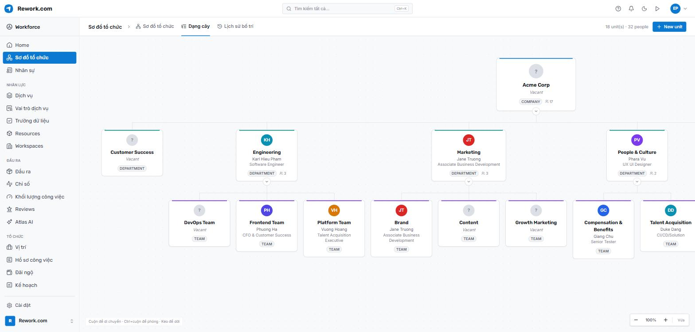
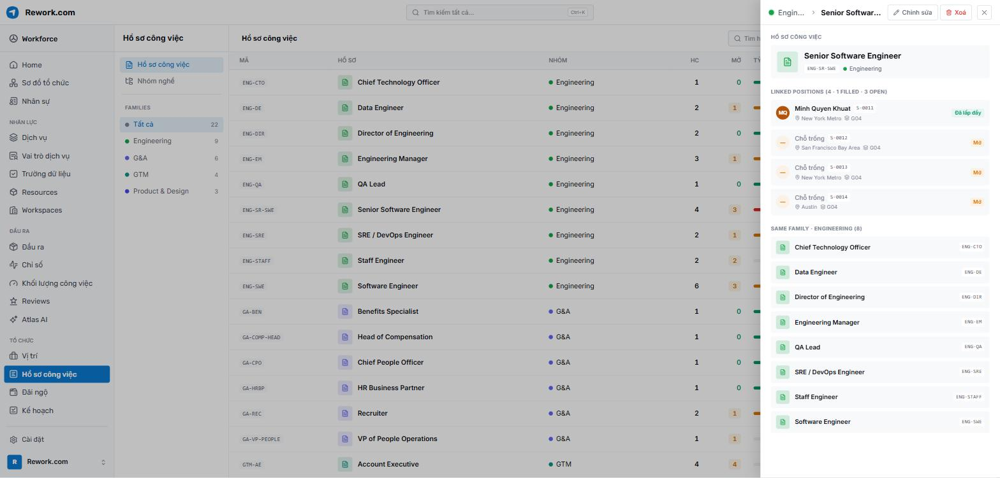
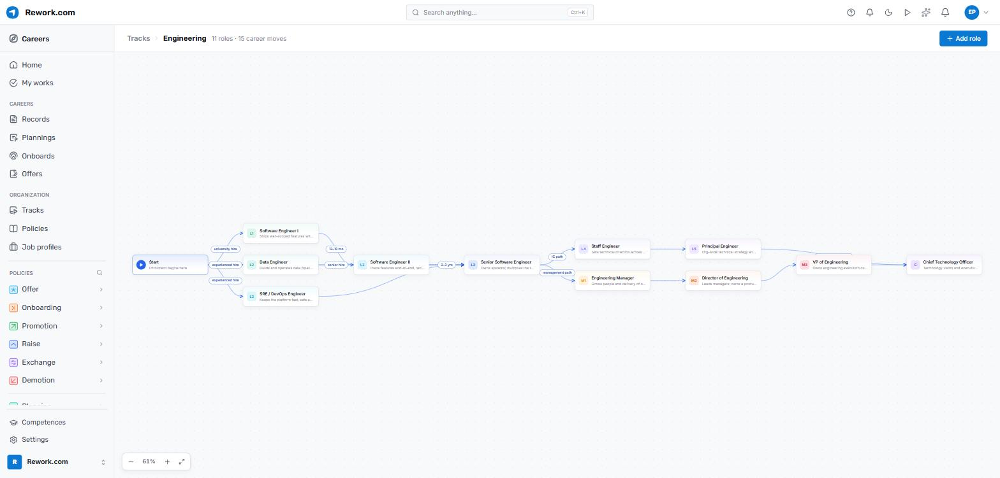
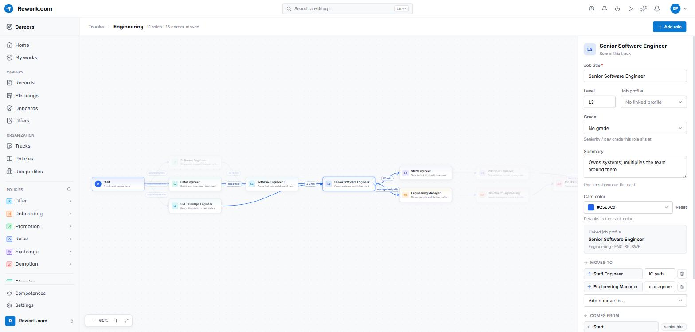
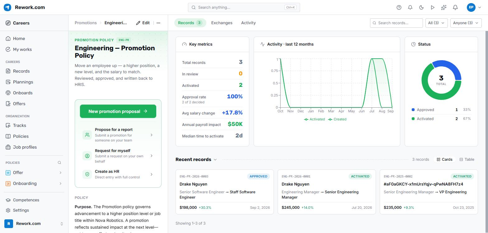
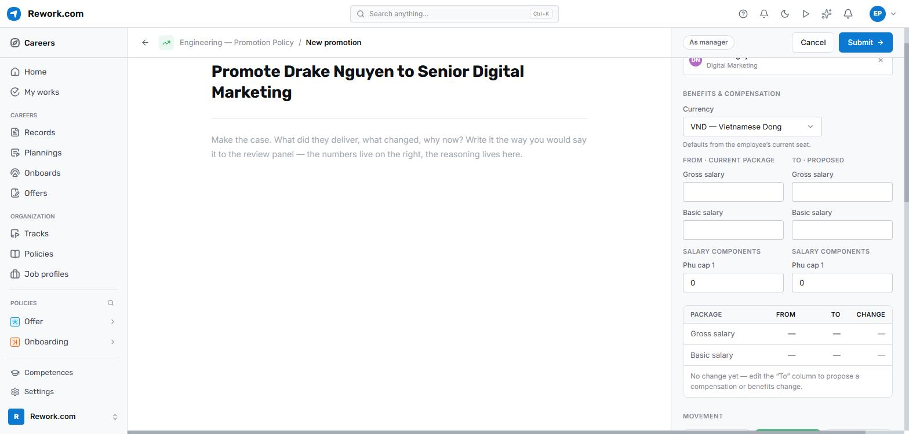
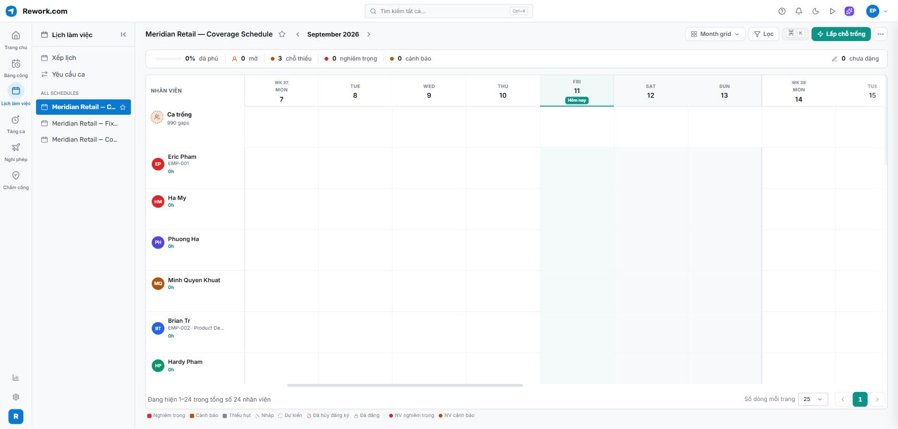
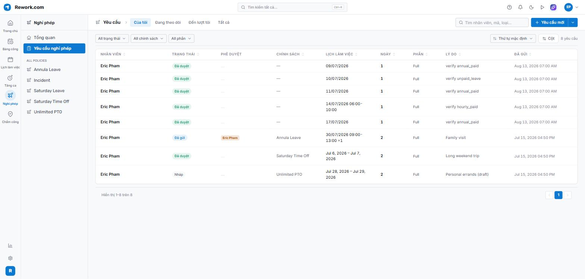
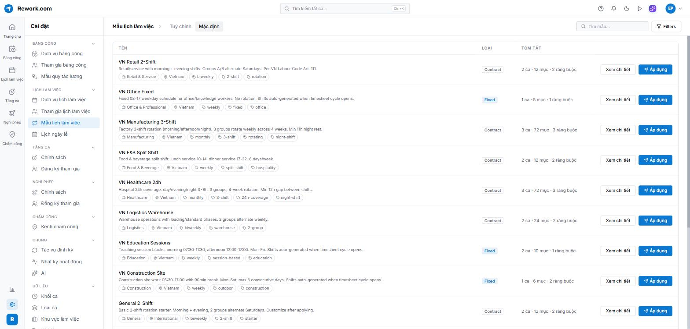
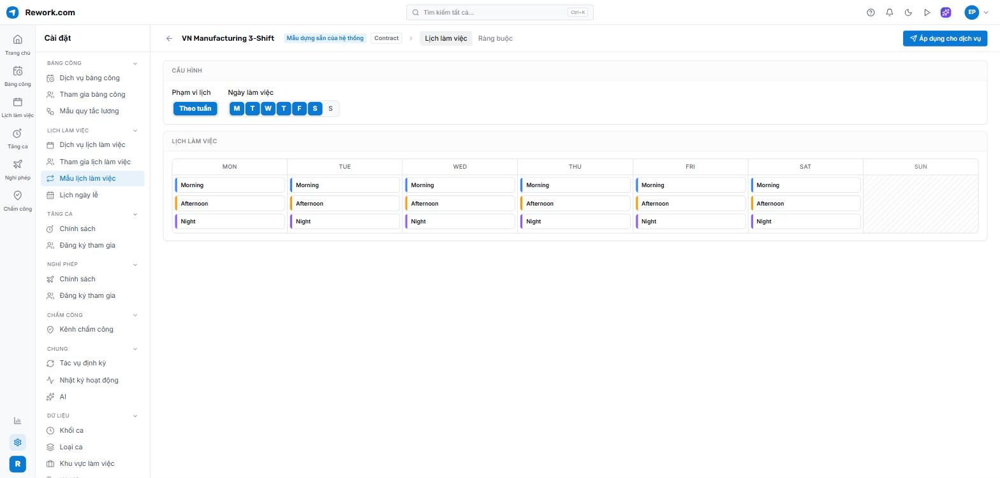
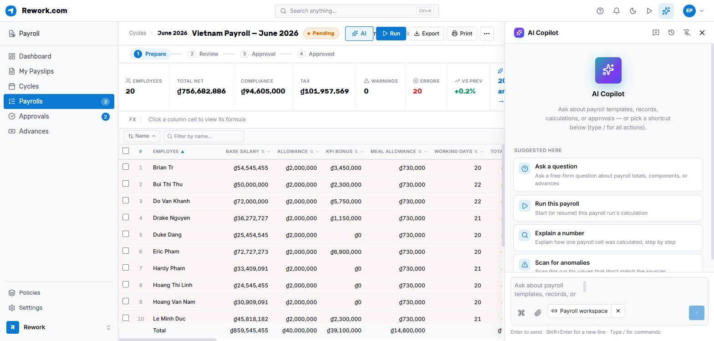
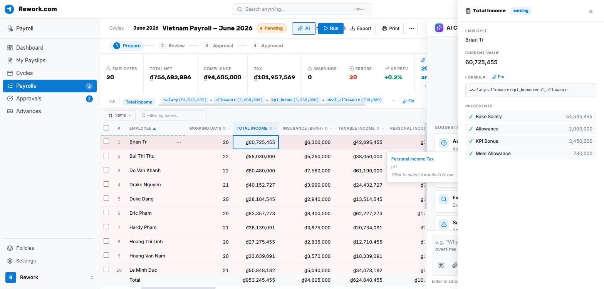
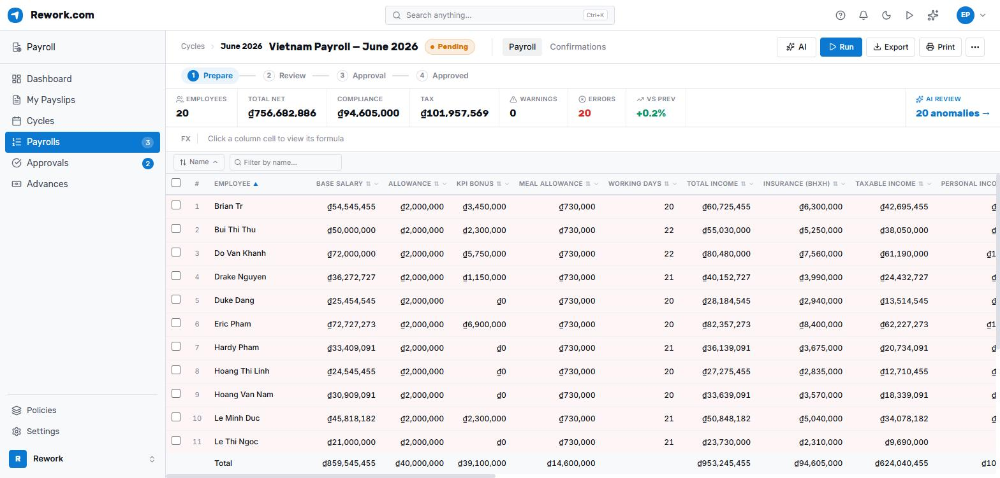
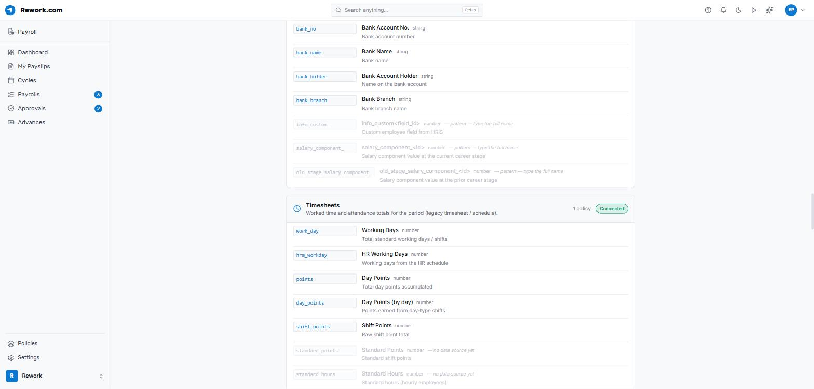
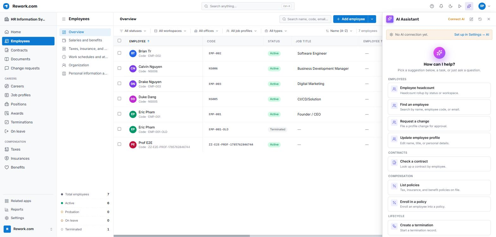